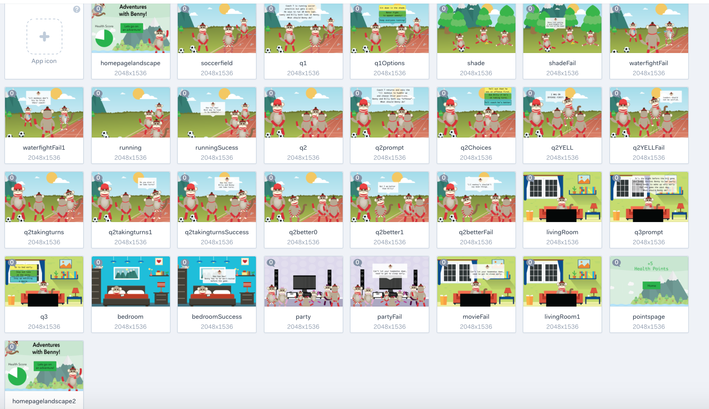

Another Adventure for Benny
In order to illustrate different adventures Benny can go on I prototyped a second adventure for the iPad. This also illustrated another user scenario, as some children may prefer to play the game on a larger screen.
I began the process by sketching out all of the scenes using Adobe Illustrator. The style and color palette were based off of Benny's first adventure for consistency. It was a bit challenging reimagining the scenes in a much wider format. It was important to fill up the frame while still keeping the backgrounds simple in order to keep the focus on Benny.
After completing all of the illustrations, I imported them to Marvel. Using a combination of click areas and timers, I was able to prototype the flow of the interactive storybook.
User Testing
I sent a link to user test through Lookback. Users were able to play with the interactive storybook while I recorded their interactions. The initial feedback that I received was that the screens moved too quickly. While I was testing on adults I decided to cut the speed in half, to account for children's slower reading pace.